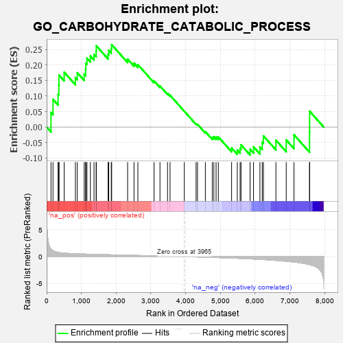
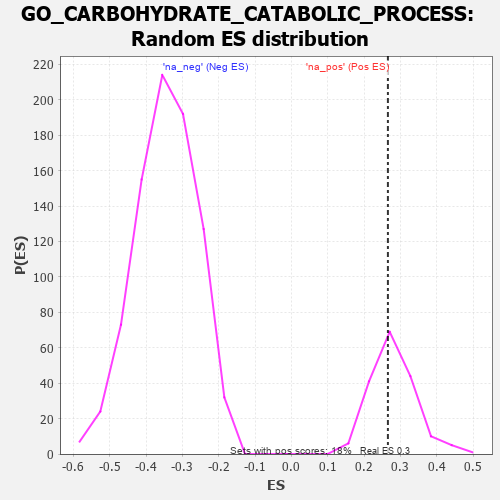

| | | Dataset | 7d |
| Phenotype | NoPhenotypeAvailable |
| Upregulated in class | na_pos |
| GeneSet | GO_CARBOHYDRATE_CATABOLIC_PROCESS |
| Enrichment Score (ES) | 0.2654683 |
| Normalized Enrichment Score (NES) | 0.94724256 |
| Nominal p-value | 0.5511364 |
| FDR q-value | 0.7753707 |
| FWER p-Value | 1.0 |
Table: GSEA Results Summary

Fig 1: Enrichment plot: GO_CARBOHYDRATE_CATABOLIC_PROCESS
Profile of the Running ES Score & Positions of GeneSet Members on the Rank Ordered List
| PROBE | GENE SYMBOL | GENE_TITLE | RANK IN GENE LIST | RANK METRIC SCORE | RUNNING ES | CORE ENRICHMENT | | 1 | GLB1 | | | 125 | 1.416 | 0.0469 | Yes |
| 2 | PYGB | | | 183 | 1.114 | 0.0890 | Yes |
| 3 | NUP85 | | | 329 | 0.772 | 0.1049 | Yes |
| 4 | GSK3A | | | 351 | 0.745 | 0.1352 | Yes |
| 5 | ARNT | | | 357 | 0.741 | 0.1673 | Yes |
| 6 | NUP54 | | | 505 | 0.627 | 0.1765 | Yes |
| 7 | RAE1 | | | 827 | 0.524 | 0.1592 | Yes |
| 8 | PYGL | | | 882 | 0.510 | 0.1750 | Yes |
| 9 | FOXK2 | | | 1081 | 0.467 | 0.1706 | Yes |
| 10 | G6PC | | | 1121 | 0.459 | 0.1860 | Yes |
| 11 | NUP93 | | | 1127 | 0.459 | 0.2057 | Yes |
| 12 | NUP43 | | | 1160 | 0.453 | 0.2217 | Yes |
| 13 | GALM | | | 1258 | 0.437 | 0.2288 | Yes |
| 14 | GALT | | | 1363 | 0.416 | 0.2341 | Yes |
| 15 | RPE | | | 1425 | 0.405 | 0.2443 | Yes |
| 16 | NUP88 | | | 1429 | 0.404 | 0.2618 | Yes |
| 17 | LRP5 | | | 1769 | 0.342 | 0.2342 | Yes |
| 18 | NUP58 | | | 1787 | 0.340 | 0.2471 | Yes |
| 19 | FOXK1 | | | 1859 | 0.326 | 0.2525 | Yes |
| 20 | NUP62 | | | 1871 | 0.324 | 0.2655 | Yes |
| 21 | SEC13 | | | 2330 | 0.256 | 0.2190 | No |
| 22 | MANBA | | | 2514 | 0.225 | 0.2058 | No |
| 23 | NUP50 | | | 2625 | 0.209 | 0.2012 | No |
| 24 | TIGAR | | | 3091 | 0.138 | 0.1486 | No |
| 25 | NUP98 | | | 3261 | 0.112 | 0.1322 | No |
| 26 | LDHA | | | 3479 | 0.080 | 0.1084 | No |
| 27 | FUT8 | | | 3551 | 0.067 | 0.1024 | No |
| 28 | NCOR1 | | | 3961 | 0.000 | 0.0508 | No |
| 29 | CRYL1 | | | 4300 | -0.060 | 0.0108 | No |
| 30 | PHKG1 | | | 4341 | -0.067 | 0.0087 | No |
| 31 | ADPGK | | | 4567 | -0.109 | -0.0149 | No |
| 32 | DCXR | | | 4766 | -0.151 | -0.0332 | No |
| 33 | XYLB | | | 4811 | -0.160 | -0.0317 | No |
| 34 | DHDH | | | 4876 | -0.172 | -0.0321 | No |
| 35 | EP300 | | | 4941 | -0.186 | -0.0319 | No |
| 36 | OGDHL | | | 5322 | -0.277 | -0.0676 | No |
| 37 | ACTN3 | | | 5486 | -0.315 | -0.0743 | No |
| 38 | GALE | | | 5567 | -0.338 | -0.0694 | No |
| 39 | PGM1 | | | 5593 | -0.342 | -0.0574 | No |
| 40 | TKFC | | | 5854 | -0.419 | -0.0717 | No |
| 41 | GALK1 | | | 5953 | -0.455 | -0.0639 | No |
| 42 | PGM2 | | | 6137 | -0.515 | -0.0642 | No |
| 43 | INSR | | | 6204 | -0.538 | -0.0487 | No |
| 44 | MIOX | | | 6238 | -0.549 | -0.0286 | No |
| 45 | TPR | | | 6597 | -0.709 | -0.0424 | No |
| 46 | HEXB | | | 6894 | -0.864 | -0.0415 | No |
| 47 | PYGM | | | 7117 | -1.006 | -0.0250 | No |
| 48 | ENO4 | | | 7564 | -1.495 | -0.0151 | No |
| 49 | CALM1 | | | 7567 | -1.499 | 0.0510 | No |
Table: GSEA details [plain text format]

Fig 2: GO_CARBOHYDRATE_CATABOLIC_PROCESS: Random ES distribution
Gene set null distribution of ES for GO_CARBOHYDRATE_CATABOLIC_PROCESS